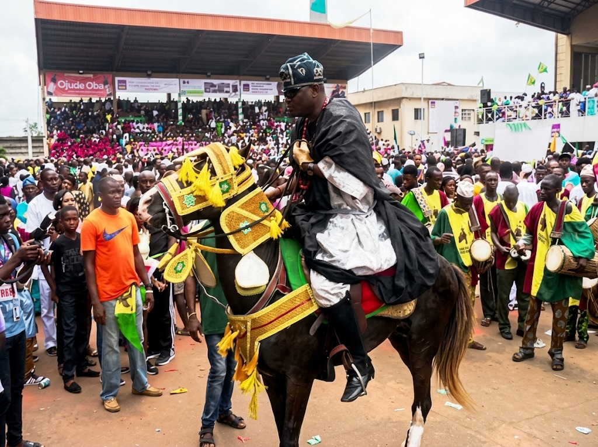
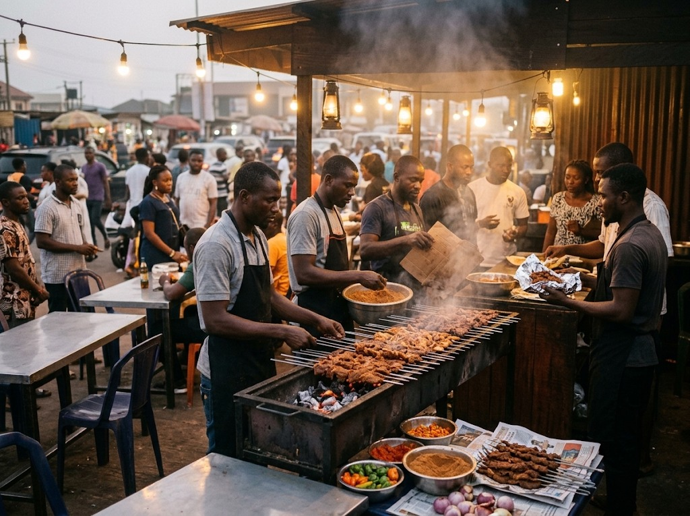

Uniting Nigeria's Pastoral Heritage With Global Agri-Export Wealth
The sovereign public festival and trade gateway for the 2026 Pilot Livestock Show and Agri-Export Expo. Championing modernized feedlots, electronic live-weight trading, and the global agri-export economy.

The Grand Royal Durbar Procession
Featuring over 200 ceremonial cavalry war stallions and cultural performers.
Four Immersive Festival Arenas
From regal equestrian pageantry to live digital trading and culinary masterclasses, experience the four vibrant sectors of Old Parade Ground.
Royal Durbar Pageantry
Ceremonial cavalry salutes, high-speed gallops, kakaki horns, and regal horse pageantry from northern and north-central emirates.

Fresh Meat & Scale Market
Watch live-weight digital scale demonstrations replacing visual guesswork with certified kilogram pricing and instant cashless payouts.

Twilight Suya Village
National Suya Master grills, artisanal seasonings, hygienic food handling demonstrations, and open-air musical evening tastings.

Traceability & Tech Pavilion
Biometric RFID cattle ear-tagging, cloud telematics, mobile abattoir pods, and Bank of Industry financing facilitation desks.
One Nation, One Livestock Powerhouse
The 2026 Pilot demonstrates how the livestock value chain unifies every geopolitical zone of Nigeria into a cohesive economic engine:
-
Northern Pastoral & Genetic Heartland: Breeding purebred Bunaji, Sokoto Gudali, and Sahelian Camels managed under scientific veterinary oversight.
-
Middle Belt & South-West Processing: High-yield feed grain cultivation, industrial feed milling, and modern refrigerated abattoirs.
-
Southern Seaports & Global Trade Corridors: Direct maritime cold-chain export terminals connecting verified Nigerian cuts to international consumers.
2026 Pilot Operational Metrics
Claim Your Complimentary Festival Gate Pass
Public entry to the festival arenas, Durbar procession, and fresh meat market is free for registered citizens and agricultural professionals.